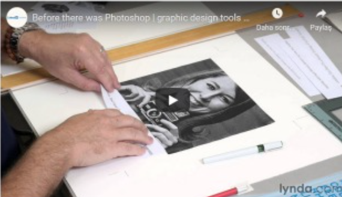

Everyday digital interfaces include arch variety ofmages, visualizations, and other pictures. However, more than anything ese, they are made of words. Oh so many words. As we equip teams to design and code usable, consistent, beautifilinterfaes using systems it's essential that words depend on a strong foundation of typography
Madi, 1am nota typography expert. ack graph design degree. T'm never the person choosing a font, scaling type, or fnessing eter spacing, Asa result, ve always been eluctant to write about typography.
On the other hand, Lama pattera hunter. Over the yeas, I've contributed to many design systems that set foundation for typography Bach traversed of steps and decisions to set foundation and apply itto an emerging library of interface components. This article summarizes those patterns.
Typography starts by setting a foundation of font families nd weights long with falbacks then explores how to build hierarchy using sz, color, addtional details like line-height, and layering responsiveness. Those models are then applied to components in a system's brary (ike Article and Header) as well as custom components made by other teams
